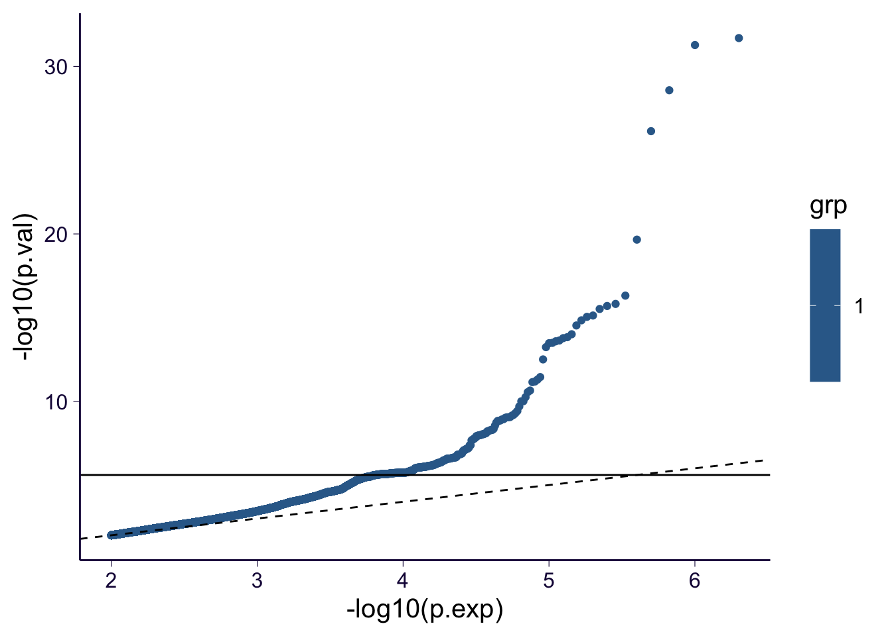
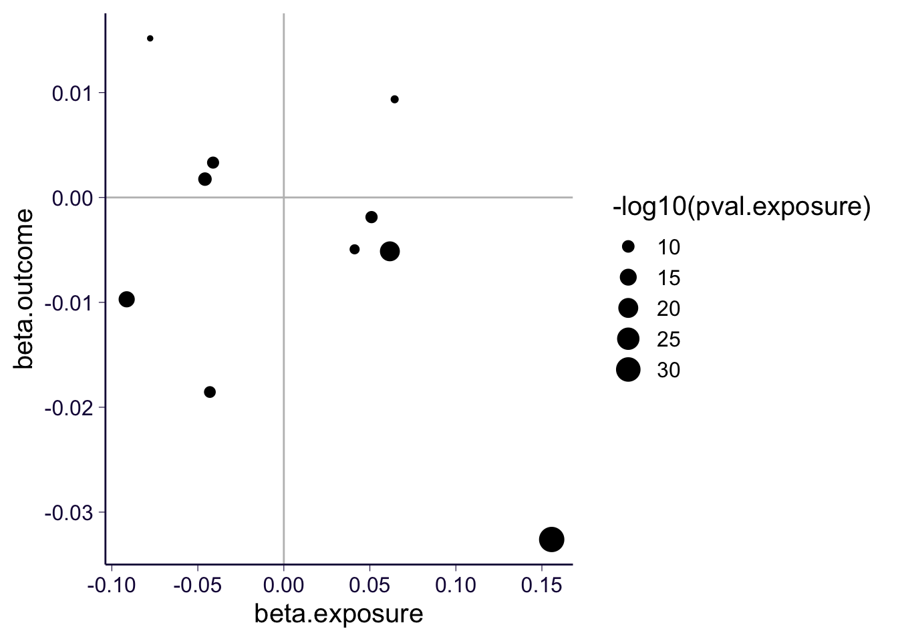
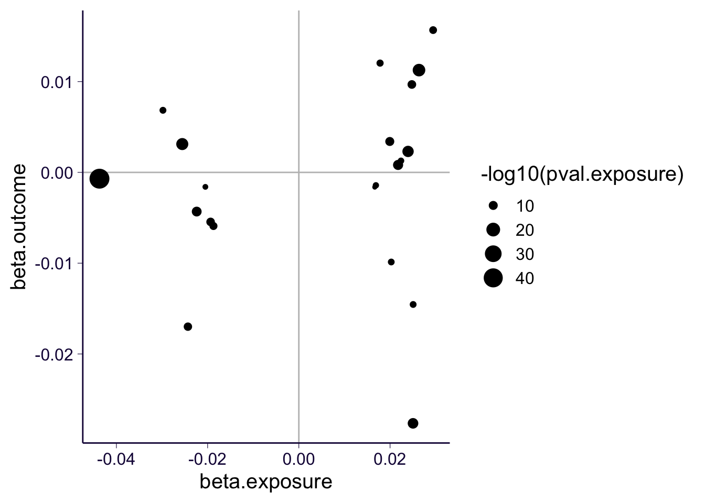

rm(list = ls())
library(ggplot2)
theme_set(theme_bw(base_size = 15))
source('https://gist.githubusercontent.com/liangyy/43912b3ecab5d10c89f9d4b2669871c9/raw/3ca651cfa53ffccb8422f432561138a46e93710f/my_ggplot_theme.R')
source('https://raw.githubusercontent.com/liangyy/misc-tools/master/plot_tool/plot_tools.R')
library(dplyr)
options(stringsAsFactors = F)
library(patchwork)
library(data.table)
options(datatable.fread.datatable = F)
library(TwoSampleMR)
source('rlib.R')As the downstream analysis of ImageXcan run. We want to perform Mendelian Randomization to see if the IDP being identified is the exposure of the outcome. Here I take an example weekly_alcohol and IDP-25882 (as suggested by this post). I use the TwoSampleMR package to perform MR. Since I could not find weekly_alcohol in UKB, I will use Alcohol intake frequency ukb-b-5779 in open gwas database link.
idp_code = 'IDP-25882'
idp_gwas = list()
for(i in 1 : 22) {
idp_gwas[[length(idp_gwas) + 1]] = arrow::read_parquet(paste0('~/Desktop/tmp/ukb_idp/idp_gwas/trans_qtl.T1.chr', i, '/', idp_code, '.parquet'))
}
idp_gwas = do.call(rbind, idp_gwas)
qqplot_by_group(idp_gwas$pval[ idp_gwas$pval < 0.01 ], 1, pval_cutoff = 0.01) + th
We need to load more meta information of the SNPs.
snp_meta = list()
for(i in 1 : 22) {
snp_meta[[length(snp_meta) + 1]] = read.table(paste0('~/Desktop/tmp/ukb_idp/subset_genotypes/IDP_HM3_finalPheno.chr', i, '.bim'), header = F)
}
snp_meta = do.call(rbind, snp_meta)
snp_meta = snp_meta %>% select(V2, V5, V6) %>% rename(rsid = V2, ref = V5, alt = V6)
idp_gwas = left_join(idp_gwas, snp_meta, by = c('variant_id' = 'rsid'))Set up the exposure GWAS.
idp_exp_dat = format_data(
data.frame(SNP = idp_gwas$variant_id, beta = idp_gwas$b, se = idp_gwas$b_se, effect_allele = idp_gwas$alt, other_allele = idp_gwas$ref)
)## No phenotype name specified, defaulting to 'exposure'.## Warning in format_data(data.frame(SNP = idp_gwas$variant_id, beta = idp_gwas$b, : The following columns are not present but are helpful for harmonisation
## eaf## Inferring p-valuesDo LD clumping on data.
idp_exp_dat = clump_data(
idp_exp_dat,
pop = 'EUR',
clump_p1 = 5e-08,
clump_p2 = 5e-08,
clump_r2 = 0.001,
clump_kb = 10000
)## Please look at vignettes for options on running this locally if you need to run many instances of this command.## Clumping HiYTOw, 1071649 variants, using EUR population reference## Removing 1071639 of 1071649 variants due to LD with other variants or absence from LD reference panelSet up the outcome GWAS.
ukb_code = 'ukb-b-5779'
outcome_dat <- extract_outcome_data(
snps = idp_exp_dat$SNP,
outcomes = ukb_code
)## Extracting data for 10 SNP(s) from 1 GWAS(s)Run MR.
if(!exists('dat_forward')) {
dat_forward <- harmonise_data(idp_exp_dat, outcome_dat)
}## Harmonising exposure (HiYTOw) and Alcohol intake frequency. || id:ukb-b-5779 (ukb-b-5779)# Perform MR
res_forward <- mr(dat_forward)## Analysing 'HiYTOw' on 'ukb-b-5779'res_forward %>% pander::pander(caption = 'IDP -> phenotype')| id.exposure | id.outcome | outcome | exposure |
|---|---|---|---|
| HiYTOw | ukb-b-5779 | Alcohol intake frequency. || id:ukb-b-5779 | exposure |
| HiYTOw | ukb-b-5779 | Alcohol intake frequency. || id:ukb-b-5779 | exposure |
| HiYTOw | ukb-b-5779 | Alcohol intake frequency. || id:ukb-b-5779 | exposure |
| HiYTOw | ukb-b-5779 | Alcohol intake frequency. || id:ukb-b-5779 | exposure |
| HiYTOw | ukb-b-5779 | Alcohol intake frequency. || id:ukb-b-5779 | exposure |
| method | nsnp | b | se | pval |
|---|---|---|---|---|
| MR Egger | 10 | -0.2375 | 0.1308 | 0.107 |
| Weighted median | 10 | -0.08236 | 0.03495 | 0.01846 |
| Inverse variance weighted | 10 | -0.05078 | 0.05682 | 0.3715 |
| Simple mode | 10 | -0.09031 | 0.05115 | 0.1112 |
| Weighted mode | 10 | -0.1081 | 0.04239 | 0.03119 |
Visualization.
dat_forward %>% filter(pval.exposure < 1e-6) %>% ggplot() +
geom_vline(xintercept = 0, color = 'grey') + geom_hline(yintercept = 0, color = 'grey') +
geom_point(aes(x = beta.exposure, y = beta.outcome, size = -log10(pval.exposure))) + th 
Load instrument GWAS.
exp_dat2 <- extract_instruments(outcomes = ukb_code)Load IDP as outcome GWAS.
idp_dat = format_data(
data.frame(SNP = idp_gwas$variant_id, beta = idp_gwas$b, se = idp_gwas$b_se, effect_allele = idp_gwas$alt, other_allele = idp_gwas$ref),
type = 'outcome',
snps = exp_dat2$SNP
)## No phenotype name specified, defaulting to 'outcome'.## Warning in format_data(data.frame(SNP = idp_gwas$variant_id, beta = idp_gwas$b, : The following columns are not present but are helpful for harmonisation
## eaf## Inferring p-valuesRun MR.
if(!exists('dat_backward')) {
dat_backward <- harmonise_data(exp_dat2, idp_dat)
}## Harmonising Alcohol intake frequency. || id:ukb-b-5779 (ukb-b-5779) and outcome (47t3ls)# Perform MR
res_backward <- mr(dat_backward)## Analysing 'ukb-b-5779' on '47t3ls'res_backward %>% pander::pander(caption = 'phenotype -> IDP')| id.exposure | id.outcome | outcome | exposure |
|---|---|---|---|
| ukb-b-5779 | 47t3ls | outcome | Alcohol intake frequency. || id:ukb-b-5779 |
| ukb-b-5779 | 47t3ls | outcome | Alcohol intake frequency. || id:ukb-b-5779 |
| ukb-b-5779 | 47t3ls | outcome | Alcohol intake frequency. || id:ukb-b-5779 |
| ukb-b-5779 | 47t3ls | outcome | Alcohol intake frequency. || id:ukb-b-5779 |
| ukb-b-5779 | 47t3ls | outcome | Alcohol intake frequency. || id:ukb-b-5779 |
| method | nsnp | b | se | pval |
|---|---|---|---|---|
| MR Egger | 21 | -0.1001 | 0.3481 | 0.7768 |
| Weighted median | 21 | 0.049 | 0.09797 | 0.617 |
| Inverse variance weighted | 21 | 0.05979 | 0.08726 | 0.4932 |
| Simple mode | 21 | 0.06854 | 0.1636 | 0.6797 |
| Weighted mode | 21 | 0.04221 | 0.1244 | 0.7379 |
Visualization.
dat_backward %>% ggplot() +
geom_vline(xintercept = 0, color = 'grey') + geom_hline(yintercept = 0, color = 'grey') +
geom_point(aes(x = beta.exposure, y = beta.outcome, size = -log10(pval.exposure))) + th 